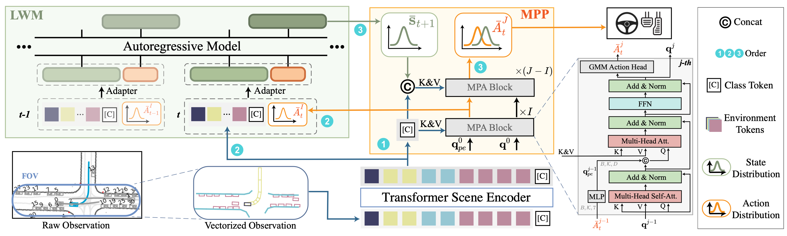
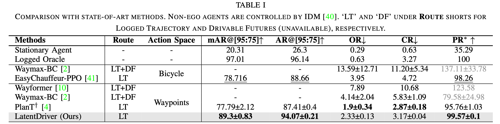

Abstract
The autoregressive world model exhibits robust generalization capabilities in vectorized scene understanding but encounters difficulties in deriving actions due to insufficient uncertainty modeling and self-delusion. In this paper, we explore the feasibility of deriving decisions from an autoregressive world model by addressing these challenges through the formulation of multiple probabilistic hypotheses. We propose LatentDriver, a framework models the environment’s next states and the ego vehicle’s possible actions as a mixture distribution, from which a deterministic control signal is then derived. By incorporating mixture modeling, the stochastic nature of decision- making is captured. Additionally, the self-delusion problem is mitigated by providing intermediate actions sampled from a distribution to the world model. Experimental results on the recently released close-loop benchmark Waymax demonstrate that LatentDriver surpasses state-of-the-art reinforcement learning and imitation learning methods, achieving expert-level performance.
Architecture
Overall pipeline for LatentDriver. The scheme is in three steps. The class token from scene encoder is first fed into a Multiple Probabilistic Planner (MPP) which will generate an intermediate action distribution from its I layer. Then the Latent World Model (LWM) is introduced to generate latent state distribution based on historical observations and intermediate actions. Lastly, the final execution signal is generated by the J layer output from planner aid by world model's output.
Merics
We employ the official evaluation metrics provided by Waymax in close-loop:
(1) OR: Off-road Rate.
(2) CR: Collision Rate.
(3) PR: Progress Ratio. The maximum value in this paper is 100%, as the future derivable area is not disclosed in WOMD.
Besides, we also provided metrics to balance OR, CR and PR, acting as our main indictor:
(1) AR@[precentage]: Arrival Rate under [precentage]. It determines if the ego vehicle has traveled [precentage] of the route safely.
(2) mAR: Mean Arrival Rate. It represents the average AR across all categorized scenarios,
Main results
Visualization Results (reactive)
We visualize the behaviors of four different methods across four typical and distinct driving scenarios as described in paper.
[1] Renz K, Chitta K, Mercea O B, et al. PlanT: Explainable Planning Transformers via Object-Level Representations[C]//Conference on Robot Learning. PMLR, 2023: 459-470.Straight
Turning Right
Turning Left
U-turn
Gallery
Our method and successfully arrive the destination safely in expected time under various scenarios. In our method, the scenario_id was forcibly converted to an int type because the string type in WOMD cannot be directly used in JAX.
Project page template is borrowed from DreamBooth.